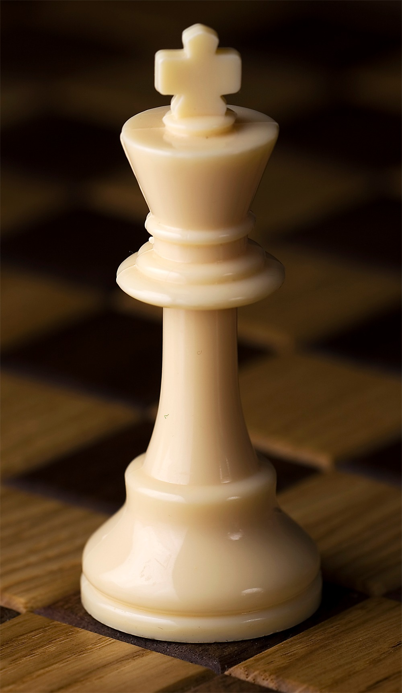
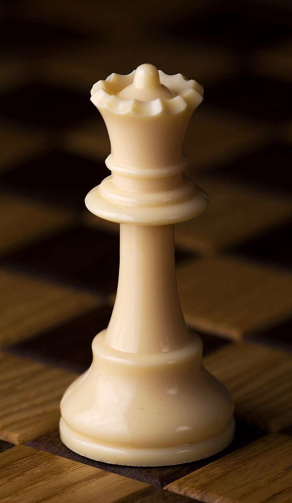
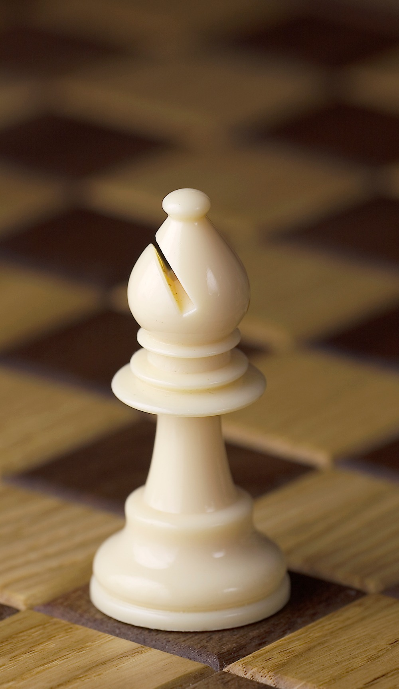
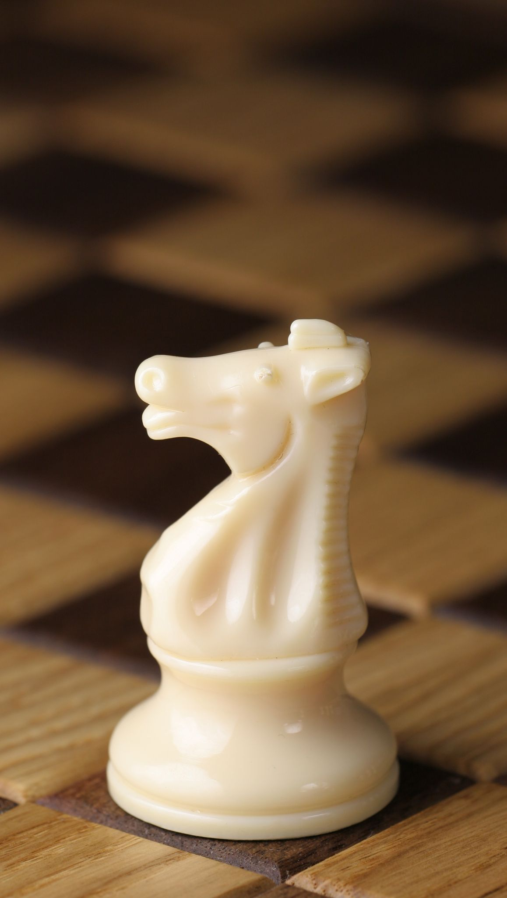
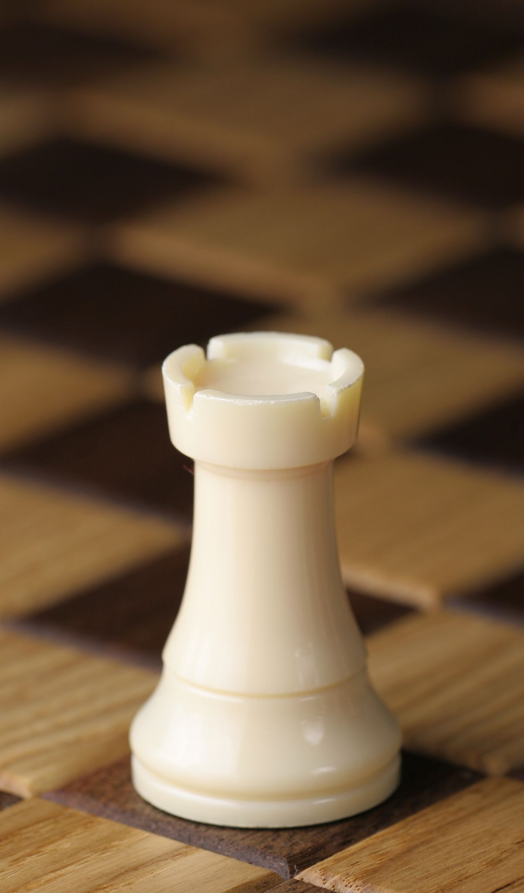
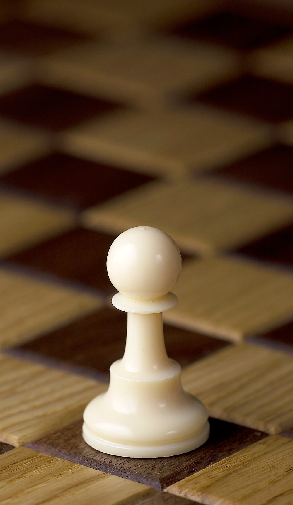

The king (♔, ♚) is the most important piece in the game of chess.
It may move to any adjoining square; it may also perform a move known as castling.
If a player's king is threatened with capture, it is said to be in check, and the player must remove the threat of capture on the next move.
If this cannot be done, the king is said to be in checkmate, resulting in a loss for that player.
A player cannot make any move that places their own king in check. Despite this, the king can become a strong offensive piece in the endgame or, rarely, the middlegame.

The queen (♕, ♛) is the most powerful piece in the game of chess.
It can move any number of squares vertically, horizontally or diagonally, combining the powers of the rook and bishop.
Each player starts the game with one queen, placed in the middle of the first rank next to the king.
Because the queen is the strongest piece, a pawn is promoted to a queen in the vast majority of cases.

The bishop (♗, ♝) is a piece in the game of chess.
It moves and captures along diagonals without jumping over intervening pieces.
Each player begins the game with two bishops. One starts between the king's knight and the king, the other between the queen's knight and the queen.
The starting squares are c1 and f1 for White's bishops, and c8 and f8 for Black's bishops.

The knight (♘, ♞) is a piece in the game of chess, represented by a horse's head and neck.
It may move two squares vertically and one square horizontally or two squares horizontally and one square vertically, jumping over other pieces.
Each player starts the game with two knights on the b- and g-files, each located between a rook and a bishop.

The rook (/rʊk/; ♖, ♜) is a piece in the game of chess.
It may move any number of squares horizontally or vertically without jumping, and it may capture an enemy piece on its path; additionally, it may participate in castling.
Each player starts the game with two rooks, one in each corner on their own side of the board.

The pawn (♙, ♟) is the most numerous and weakest piece in the game of chess.
It may move one vacant square directly forward, it may move two vacant squares directly forward on its first move, and it may capture one square diagonally forward.
Each player begins a game with eight pawns, one on each square of their second rank.
white pawns start on a2 through h2; the black pawns start on a7 through h7.